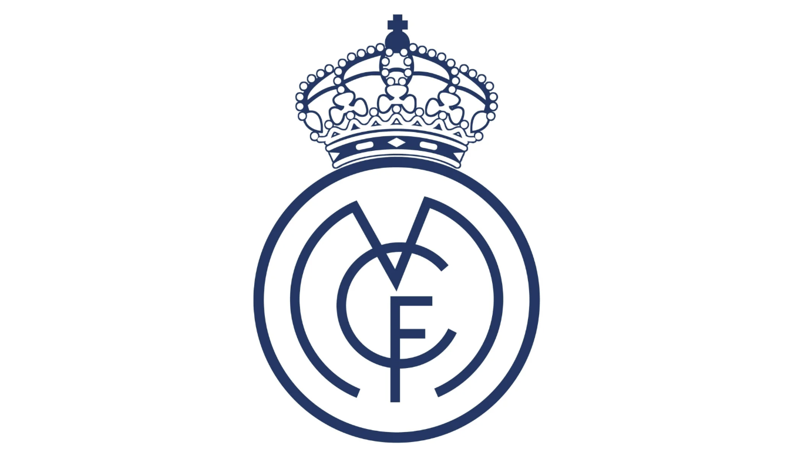
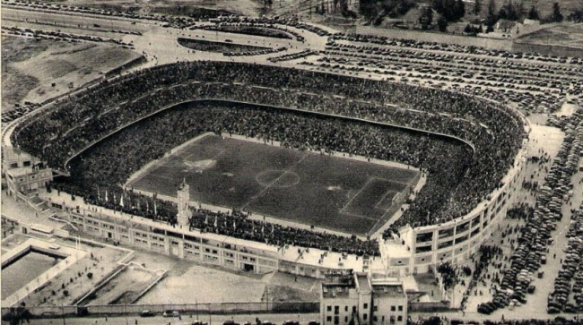
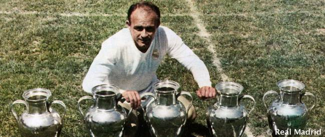
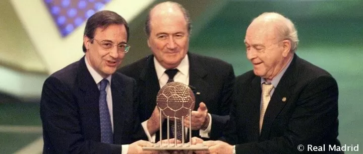
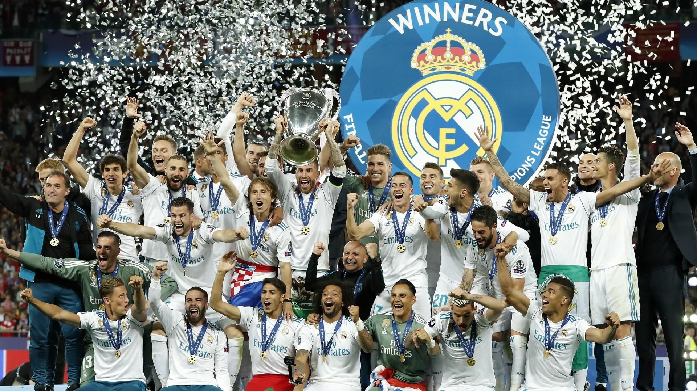
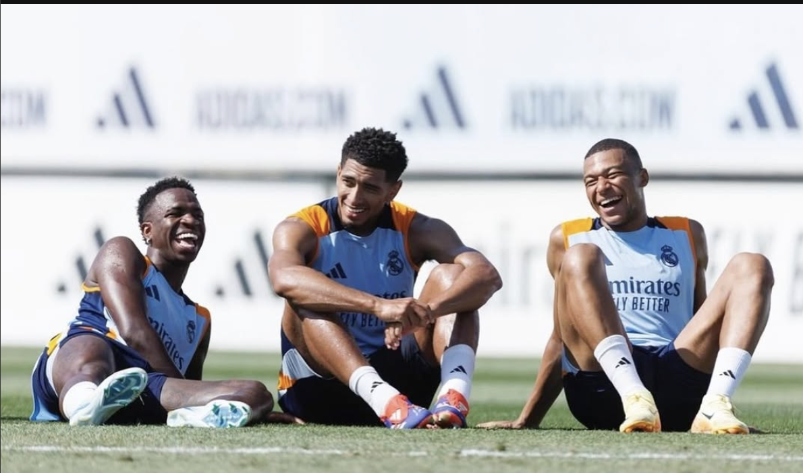

Foundation
Real Madrid Club de Fútbol, originally named Madrid Football Club, was founded by Julián Palacios and Juan Padrós on March 6, 1902.
Royality
King Alfonso XIII granted the club his royal patronage, allowing the club to add "Real" (Royal) to its name and the royal crown to its emblem.

Santiago Bernabéu Stadium
The club's stadium, named after president Santiago Bernabéu, was founded on December 14, 1947.

European Dominance
Real Madrid won the first five European Cup competitions, establishing themselves as a dominant force in European football under the leadership of Santiago Bernabéu and with stars like Alfredo Di Stéfano.

FIFA Club of the Century
Real Madrid was named FIFA Club of the 20th Century, recognizing its unparalleled success and contribution to football.

Champions League Three-peat
Under Zidane, Real Madrid became the first team to win three consecutive Champions League titles in the modern era. During this time they also won 4 out of 5 Champions League trophies something that will never be done again

Continuing Legacy
Real Madrid continues to be the most successful and valuable sports franchises in the world, with a global fanbase.
